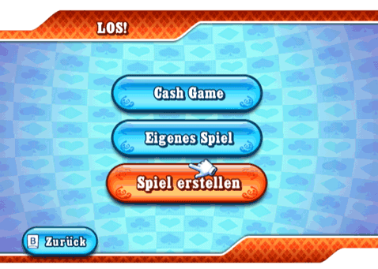
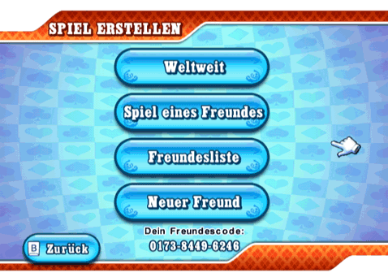

20 |
Los! |
 |
 Wähle ein schnelles “Cash Game“, “Eigenes Spiel“, um mit Spielern aus aller Welt zu spielen oder erstelle mit "Spiel erstellen" selbst ein Spiel. Cash Game Du wirst automatisch an einen Tisch gesetzt, der Small Blind- und Big Blind-Beträge hat, die du dir leisten kannst. Wenn du einem laufenden Cash Game beitrittst, wird der höchste Betrag, den du dir leisten kannst, als Buy-In gewählt. Eigenes Spiel Im Menü "Spielinfo" kannst du deine Tisch-Suchkriterien eingeben und wirst automatisch mit Gegnern aus aller Welt verbunden. Nur Cash Game: Je nachdem, ob Cash Games verfügbar sind, setzt du dich gleich an den Tisch oder wartest in der Lobby, bis ein Cash Game beginnt. Spiel erstellen  In diesem Menü kannst du ein weltweites Spiel oder ein privates Spiel mit Freunden erstellen, deine Freundesliste aufrufen und ihr Freunde hinzufügen oder sie entfernen. Ein weltweites Spiel erstellen In einem weltweiten Spiel, kannst du mit Spielern aus aller Welt verbunden werden. Alle Spieler können Freunde einladen. Nur der Gastgeber kann Plätze reservieren und das Spiel starten. Ein Spiel mit Freunden erstellen Du willst nicht mit Fremden spielen? Kein Problem! In diesem Menü kannst du ein privates Spiel erstellen, an dem nur deine Freunde teilnehmen können. |
 |
 |
 |